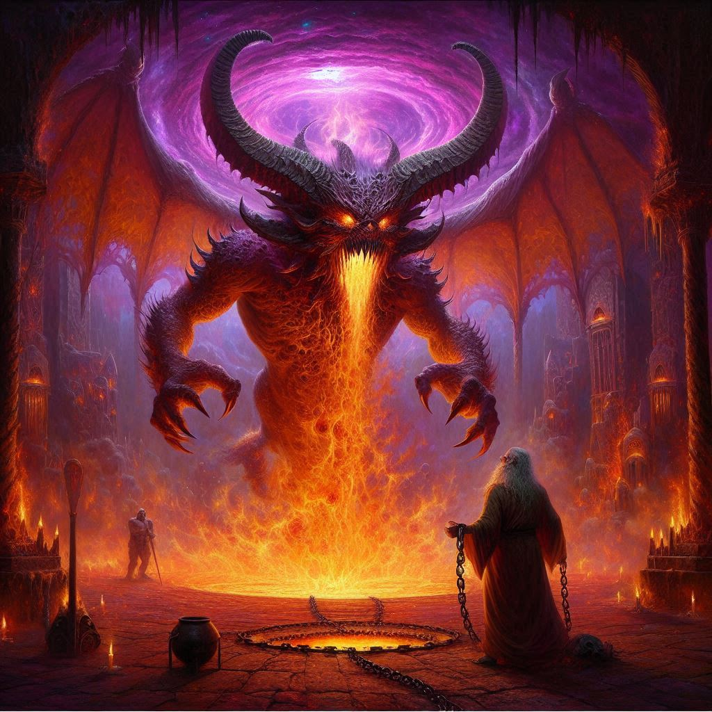
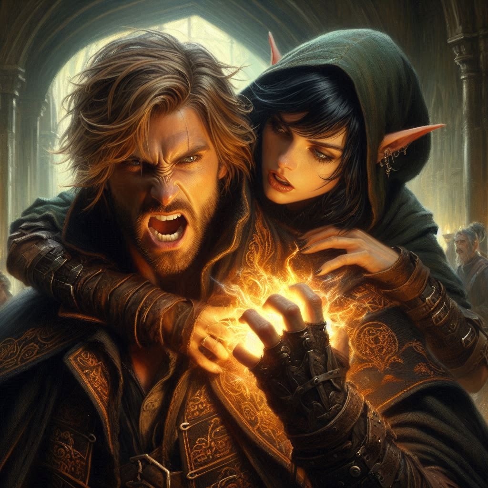

Of Light and Love
In the smoky shadows of the demon temple of Umbra’Thal, your gaze falls on Jorsh, his hands trembling as he channels the raw, dark energy swirling around him. You make your decision: Jorsh needs you now more than ever. Leaving Onyx behind, your heart pounds with fear and determination as you rush to Jorsh's side, catching his eyes with a steady, unwavering resolve. In that moment, he knows you’ve chosen him, despite everything. You reach for his hand, your fingers slipping into his with a strength you never knew you had.
The room around you pulses with an intense, otherworldly energy, shadows flickering over the towering stone walls of the temple. Ahead, Varis watches you with contempt, his silhouette backlit by the portal to the nine hells, a sinister gleam in his eyes as he tightens his grip on Onyx, preparing the final sacrificial incantation to summon Yaldaboath fully into this realm.
With Jorsh at your side, you feel the shadows lift slightly, his magic surging with newfound power at your touch. Jorsh’s fingers entwine with yours, his aura burning brighter. He draws energy from you, a golden glow blooming between your joined hands, mixing with the dark forces he commands. Together, you turn to Varis, who raises his hand to summon a wave of dark elves to defend him, their glinting eyes and ashen skin casting a menacing aura as they close in.
“Hold on to me,” Jorsh whispers, and you nod, tightening your grip. He raises his free hand, unleashing a wave of crackling dark fire. The dark elves screech as the flames consume them, but Varis’s laugh cuts through the air, cold and mocking.
“You think love can stop me?” Varis sneers, his face twisted with disdain. His fingers curl into fists as he channels his own magic, a midnight-colored flame springing from his hands. But as his spell rockets towards you, Jorsh raises his hand, deflecting it just in time. You feel your pulse align with Jorsh’s, both of you moving as one, an unspoken rhythm linking your thoughts.
Suddenly, the ground trembles beneath you as the portal to the nine hells opens wider. Yaldaboath, an immense, monstrous form with blazing eyes and tendrils of shadow, begins to emerge, his dark presence choking the air with malice. Varis releases Onyx, his victory so close that he can hardly contain his anticipation. Onyx slumps to the ground, weakened but alive. The demon god's voice reverberates through the temple, a low growl that shakes the walls. You can barely hear yourself think over the roaring of the portal, but you hear Jorsh’s voice beside you, steady and determined.
“We’re ending this. Together,” he says.
Just then, Varis hurls himself at Jorsh, but you’re faster. Drawing your dagger, you step between them, blocking Varis’s attack, your blade glinting as it catches his cloak. With a powerful swing, you knock him back, giving Jorsh a chance to focus. His magic roars to life, a dark light filling his eyes as he channels the power of Yaldaboath’s own shadow against Varis.
As the dark energy grows around you, you see Onyx, weak but defiant, lift himself to his knees, muttering an incantation. He meets your eyes and gives a nod, the quiet signal of his trust. He knows what you’re about to do—and in the depths of your heart, you know he is ready to make his sacrifice. Yaldaboath’s monstrous form is now fully in the room, his maw wide and consuming, inching toward Onyx. With one last whisper of farewell, Onyx allows himself to be taken, his form dissolving into a radiant glow as Yaldaboath devours him.
But it’s not an end—it’s the beginning of something greater. Onyx’s light grows from within Yaldaboath, expanding outward in blinding intensity. The demon god roars, his massive form splitting as Onyx’s spirit—the Archon Adonais—detonates from within him, his final act an unstoppable force of pure light.
“Shield!” Jorsh cries. With the last of his strength, he throws a protective barrier around you both. The blast rocks the entire temple, collapsing pillars and shaking the ancient stones as Yaldaboath’s darkness implodes, taking Varis with him. A shockwave spreads out, pushing back the dark elves, sending them scattering into the shadows.
As the temple settles into silence, the portal flickers, fading to a dull glow before vanishing completely. You lower your hands, realizing you’re alive, shielded by the love you poured into Jorsh, a bond now forged unbreakably. He looks down at you, his gaze softening as he takes in the destruction around you and the absence of Varis and Onyx.
Together, you both move toward the throne of Umbra’Thal, the final vestiges of Yaldaboath’s energy dissipating as you sit beside Jorsh, a strange peace settling over the temple’s hollowed remains. The Realm of Shadows is quiet, but you feel the strength of those you’ve lost, of Onyx’s sacrifice, lingering in the air, as if blessing this new era.
And though Belladonna and its troubles await, you know now that Umbra’Thal has found its new rulers.